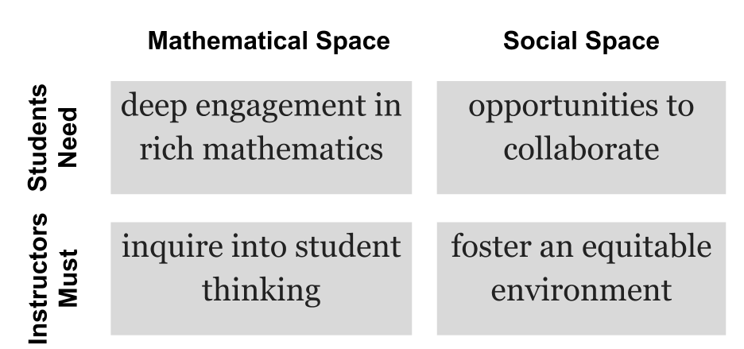
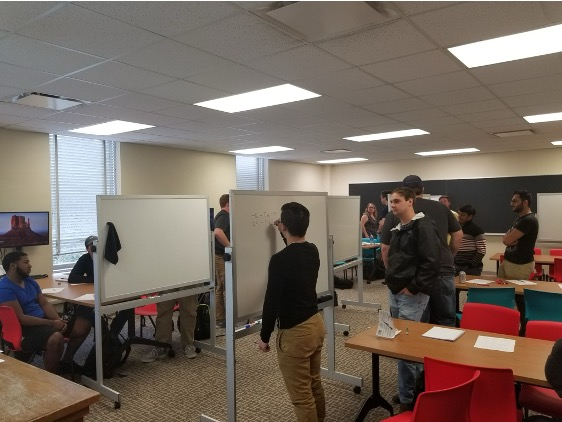
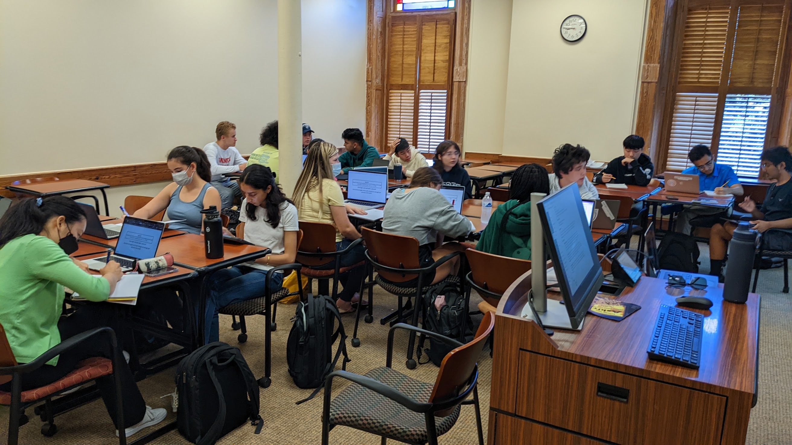

Team Based Inquiry Learning: an introduction
University of South Alabama Math Colloquium
Tien Chih Oxford College of Emory University
About Oxford College
- One of several colleges of Emory University.
- About 900-950 students, 1st and 2nd year only.
- Strong emphasis on a liberal arts curriculum.
- Mostly 100 and 200 level courses.
- Started there in 2023.
Team Based Inquiry Learning

- I was an inaugural TBIL fellow in 2021.
- Developed TBIL activities for courses not typically taught in an IBL way.
- Authored in PreTeXt.
- Scaffolded activities and MC were really powerful tools.
Motivation
- Inquiry-Based Learning’s effectiveness is well supported by large research studies.
- IBL is most often used in upper division courses.
- IBL is most often used in smaller courses.
Challenge: How can we bring the benefits of IBL into our larger, lower division service courses?
The 4 pillars of Inquiry Based Learning
Team Based Learning
- Students work in permanent, heterogenous teams.
- Students complete pre-class work to free up class time for engaging activities.
- Students work in teams during class on significant problems to deeply learn.

Readiness Assurance Process
Every module begins with a readiness assurance process.
- Students prepare outside of class.
- Students take a readiness check individually.
- Immediately afterwards, teams collaborate on the same readiness check.
- Resolve any outstanding misconceptions with Just-In-Time teaching.
4-S Activities
The bulk of class time is spent with students working in teams on 4-S Activities.
- Teams work on the Same task.
- The task is a Significant task.
- Teams commit to a Specific choice.
- Teams Simultaneously report their choice.
- Teams discuss/solve the task within their team first.
- Instructor circulates, eavesdropping and facilitating intra-team discussions.
- Teams simultaneously report their response to the class.
- The facilitator asks teams to explain their reasoning.
Assesment
CheckItImpact on teaching

- More engaged and motivated students.
- Deeper understanding of the course material.
- Authentic disciplinary experience.